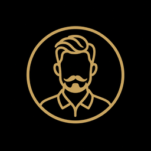
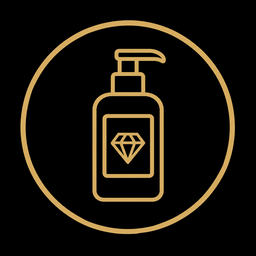
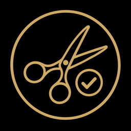

A NAVOR
MAIS QUE UMA BARBEARIA
UMA EXPERIÊNCIA ÚNICA
A Navør é uma barbearia que nasceu da paixão por oferecer uma experiência única aos homens que buscam mais do que apenas um corte de cabelo. Fundada em 2026, a Navør combina tradição e modernidade, proporcionando um ambiente acolhedor e sofisticado.

| 01 | 02 | 03 |
|---|---|---|
| PRECISÃO | EXCLUSIVIDADE | EXCELÊNCIA |
| Cada corte é executado com atenção aos detalhes, respeitando seu estilo e valorizando cada traço. | Um atendimento pensado para você, com cuidado personalizado em cada etapa da experiência. | Profissionais qualificados, técnicas apuradas e produtos selecionados para entregar um resultado de alto padrão. |
- ATENDIMENTO PERSONALIZADO
- BEBIDA DE CORTESIA
- AMBIENTE CLIMATIZADO
- PRODUTOS PREMIUM
- PROFISSIONAIS ESPECIALIZADOS
- EXPERIÊNCIA EXCLUSIVA


